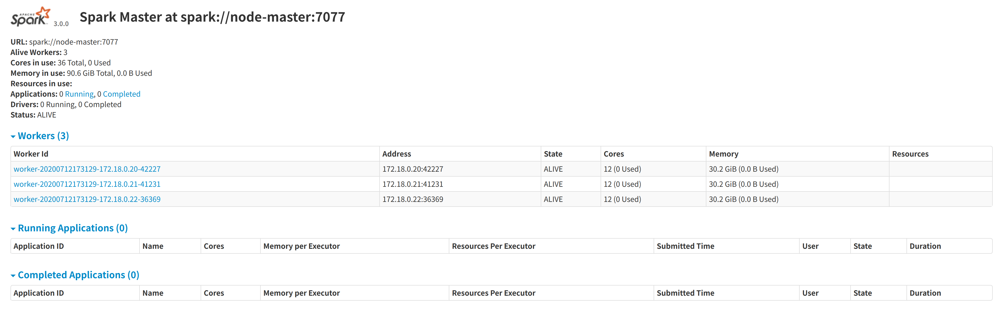

Install and deploy Arctern on a Spark cluster¶
This article describes how to use Docker to start three containers on a host and organize them into a Spark cluster in standalone mode. Then, you can run the CPU version of Arctern on the cluster. The information of the three containers is as follows:
| Host name | IP address | Container name | Type |
|---|---|---|---|
| node-master | 172.18.0.20 | node-master | master |
| node-slave1 | 172.18.0.21 | node-slave1 | worker |
| node-slave2 | 172.18.0.22 | node-slave2 | worker |
Create a Docker subnet¶
Create a Docker subnet named arcternet:
$ docker network create --subnet=172.18.0.0/16 arcternet
If you see the error message below, it means that the subnet already exists and you do not need to create a subnet. Also, you can delete the existing subnet and then recreate the subnet; or try to create a subnet in another network segment.
Error response from daemon: Pool overlaps with other one on this address space
After creating the subnet, you can view the new subnet with the following command:
$ docker network ls
Start containers¶
$ docker run -d -ti --name node-master --hostname node-master --net arcternet --ip 172.18.0.20 --add-host node-slave1:172.18.0.21 --add-host node-slave2:172.18.0.22 ubuntu:18.04 bash
$ docker run -d -ti --name node-slave1 --hostname node-slave1 --net arcternet --ip 172.18.0.21 --add-host node-master:172.18.0.20 --add-host node-slave2:172.18.0.22 ubuntu:18.04 bash
$ docker run -d -ti --name node-slave2 --hostname node-slave2 --net arcternet --ip 172.18.0.22 --add-host node-master:172.18.0.20 --add-host node-slave1:172.18.0.21 ubuntu:18.04 bash
Install basic libraries and tools¶
Here we use the Docker image ubuntu:18.04 and take node-master as an example to introduce the installation steps.
Note: You need to repeat the operations below for
node-slave1andnode-slave2.
Enter the node-master node:
$ docker exec -it node-master bash
Install basic dependencies and tools:
$ apt update
$ apt install -y wget openjdk-8-jre openssh-server vim sudo
$ service ssh start
Create a new user named arcterner and set the password to arcterner:
$ useradd -m arcterner -s /bin/bash -G sudo
$ echo -e "arcterner\narcterner" | passwd arcterner
Set up password-free login¶
Note: This operation is only performed on
node-master.
Log in to node-master as user arcterner:
$ docker exec -it -u arcterner node-master bash
Enable node-master to log into all nodes without password:
$ ssh-keygen -t rsa -P '' -f ~/.ssh/id_rsa
$ cat ~/.ssh/id_rsa.pub >> ~/.ssh/authorized_keys
$ ssh-copy-id node-master
$ ssh-copy-id node-slave1
$ ssh-copy-id node-slave2
Deploy Spark and Arctern¶
Note: You need to log into all Docker nodes as the
arcterneruser to deploy Spark and Arctern.
See the article below:
Configure Spark cluster¶
Log into node-master as user arcterner. Run vim ~/spark-3.0.0-bin-hadoop2.7/conf/slaves to edit the slaves file. The content of the file is as follows:
node-master
node-slave1
node-slave2
Run vim ~/spark-3.0.0-bin-hadoop2.7/conf/spark-defaults.conf to edit the spark-defaults.conf file. Add the following to the file:
spark.master spark://node-master:7077
Start Spark cluster¶
Log into node-master as the arcterner user and start the cluster:
$SPARK_HOME/sbin/start-master.sh
$SPARK_HOME/sbin/start-slaves.sh
In the host node-master, close the HTTP proxy, open the link http://172.18.0.20:8080/ in the browser to check if the Spark cluster is started correctly:

Verify deployment¶
Log into node-master as the arcterner user and enter the Conda environment:
$ conda activate arctern_env
Check if the deployment is successful:
$ export PYSPARK_PYTHON=$CONDA_PREFIX/bin/python
$ python -c "from arctern_spark import examples;examples.run_geo_functions_test()"
If you see the following message, then the test example is passed.
All tests have passed!